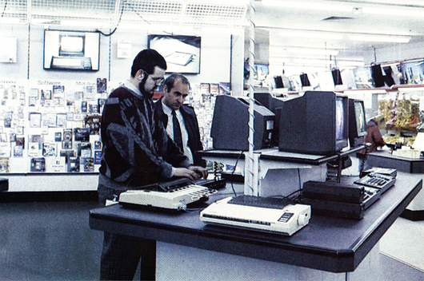
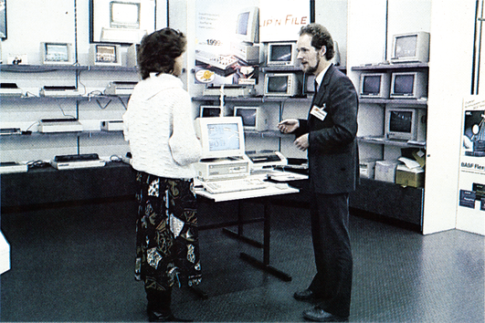

Unter die Lupe genommen: Computer-Fachberatung
Viele Einsteiger sind beim Kauf eines Computers darauf angewiesen, daß sie in Geschäften gut beraten werden. Wir haben uns einmal für Sie auf die Reise begeben und einige Firmen — vom Fachgeschäft bis hin zum Großhandel — auf ihre Beratung getestet.
Sicherlich ist es auch Ihnen schon einmal so gegangen: Sie kommen in ein Geschäft und wollen sich irgend etwas kaufen, ohne über genügend Fachwissen zu verfügen. Jetzt ist es eine wichtige Aufgabe des jeweiligen Verkäufers, Ihre Bedürfnisse und Wünsche zu erkennen und abzuwägen, um Sie anschließend richtig und umfassend zu beraten. Ein guter Verkäufer wird Ihnen das für Ihre Zwecke richtige Produkt vorstellen und empfehlen. Dies erfordert jedoch ein fundiertes Fachwissen und einen guten Überblick über die erhältlichen Produkte.
Ein guter Verkäufer muß in der Regel über jahrelange Erfahrung und eine gute Ausbildung verfügen, um den Kunden fachgerecht beraten zu können. Das trifft natürlich auch für den Computer-Sektor zu.
Vor wenigen Jahren erst wurde der Markt mit dem neuen Medium Computer konfrontiert. Da sich dieser Markt äußerst schnell und unberechenbar entwickelt, ist es für Firmen besonders schwer, ihren Verkäufern eine gute Ausbildung zu geben und gleichzeitig auf aktuelle Trends zu reagieren.
Das 64'er-Magazin wollte nun wissen, wie gut sich der Computer-Fachhandel inzwischen entwickelt hat und wie gut der Kunde bei den Firmen beraten wird. Wird auch der Einsteiger in Geschäften richtig bedient, oder sind nur Profis in der Lage, die Spreu vom Weizen zu trennen? Versuchen die Firmen lediglich die »Ladenhüter loszuwerden«, oder kann sich der Neuling beruhigt einem Verkäufer anvertrauen? Überwiegt in den Geschäften die »Cash-and-Carry-Mentalität«, oder findet auch der Laie ein offenes Ohr für seine Fragen und Probleme?
Tatort München
Um für die gestellten Fragen eine oder mehrere Antworten zu finden, haben wir uns auf den Weg gemacht und in München mehrere Fachgeschäfte, Kaufhäuser und Großmärkte besucht. Unter der Tarnkappe des Computer-Laien baten wir den jeweiligen Verkäufer um eine detaillierte Beratung in Sachen Computer, Massenspeicher, Monitor, Drucker und Software. In der dauernden Angst einer möglichen Entlarvung durch verräterische Äußerungen, zogen wir durch die Fachabteilungen für Heimcomputer und erlangten dabei so manche neue Erkenntnis.
Unser erster Weg führte uns zu einem Geschäft der Kaufhof AG. Diese Kaufhauskette verfügt über viele Filialen in ganz Deutschland, und wir waren gespannt, wie intensiv sich die großen Kaufhäuser mit den »kleinen« Heimcomputern beschäftigen.
Nachdem wir uns zu der Computer-Abteilung im vierten Stock durchgewühlt haben, stehen wir vor mehreren Regalen und vielen Tischen, die uns eine durchaus sehenswerte Auswahl an Computern und Zubehör präsentieren. Mit betont neugierigen Blicken leiten wir die erste Stufe der »Prüfung« ein. Wird uns ein Verkäufer anmerken, daß wir einen Rat benötigen, oder müssen wir ihn explizit ansprechen? Um es kurz zu machen: Es kam kein Verkäufer, so daß wir nun auf Eigeninitiative umschalteten.
»Hätten Sie wohl einen Moment Zeit für uns...?«, sprechen wir einen Herrn mittleren Alters an, der sich uns auch gleich bereitwillig zur Verfügung stellt. Noch etwas nervös, beginnen wir mit unserer Fragerei. Nur keinen Fehler machen, heißt es jetzt! Wir sind Anfänger und kennen uns demzufolge (natürlich) weder mit CP/M noch mit einem Diskettenlaufwerk aus. Nach kurzer Zeit jedoch verschwindet die Nervosität. Wir sind vollkommen in unsere Rolle als Einsteiger geschlüpft, und der Verkäufer gibt uns mit großer Geduld Antworten auf alle unsere, teilweise naiv klingenden, Fragen. Daß die Fragen naiv klingen heißt natürlich noch lange nicht, daß sie es auch sind. Wir legten uns unsere Sätze vielmehr so zurecht, daß sie einen unerfahrenen Verkäufer mehrmals in Verlegenheit gebracht hätten.
Wir erkundigen uns nach dem C 64, der uns von Bekannten als guter Computer empfohlen worden sei. Wird der C 64 auch von dem Verkäufer empfohlen? Welche Geräte benötigt man als Grundausstattung, wenn man Programmieren lernen möchte? Gibt es gute Bücher und Programme als Unterstützung für den Einsteiger? Kann man den Computer auch für praktische Anwendungen einsetzen?
Unsere »Testperson« zeigt sich von ihrer besten Seite. Zweifellos haben wir es bei dem Verkäufer mit einem erfahrenen Fachmann zu tun, der auch privat einen Computer sein eigen nennt. Die meisten Fragen werden zu unserer Zufriedenheit beantwortet. Ein paar kleine, sachliche Fehler schlichen sich zwar ein, sie hätten jedoch in keinem Fall zu einer Fehlentscheidung beim Kauf führen können.
Insgesamt ein sehr positives Ergebnis, mit dem wir das Kaufhaus nach einer halben Stunde wieder verlassen. Es wurde uns weder ein Computer aufgedrängt, noch zeigte der Verkäufer Ungeduld.

Das fängt ja gut an...
Unsere nächste Station ist Hertie. Diesmal geht es in den Keller, vorbei an einem riesigen Regal mit Fachzeitschriften zur Abteilung für Bürobedarf. Wieder begeben wir uns direkt zu den Commodore-Computern und bleiben, einen unschlüssigen Eindruck machend, davor stehen. Ab und zu schicken wir einen verhohlenen Blick zu den Verkäufern und — bleiben wiederum mit unseren Nöten allein.
Wieder starten wir nach ein paar Minuten des Abwartens unsere Eigeninitiative: »Wir wollen uns gerne einen Computer zulegen und haben von Bekannten...« Der Verkäufer — diesmal ein jüngerer Herr — zögert kurz. Offensichtlich ist er auf Einsteiger nicht vorbereitet gewesen. Kurz danach hat er sich jedoch »gefangen« und paßt sich sofort in seinen gesamten Ausführungen unserem »Niveau« an.
Wir stellen die schon bekannten Fragen, und wieder bekommen wir detaillierte und genaue Auskünfte zu allen unseren Problemen. Die Antworten sind sachlich richtig und ermöglichen es dem Einsteiger, sich eine Computer-Anlage zu kaufen, die seinen Wünschen gerecht wird. Auch unsere teilweise eingestreuten »Fangfragen« bringen den Verkäufer nicht aus dem Konzept und lassen zur Gewißheit werden, was wir im Laufe der Unterhaltung schon vermutet haben: Wieder haben wir es mit einem Spezialisten zu tun, der sich auch privat mit Computern beschäftigt.

Dieses Mal kehren wir der Computer-Abteilung erst nach etwa 45 Minuten den Rücken; wieder mit einem sehr erfreulichen Eindruck. Der Einsteiger muß zwar auf die einzelnen Verkäufer zugehen und Fragen stellen; die Fragen, die er stellt, werden jedoch sicher und richtig beantwortet.
Die Spannung steigt...
Unser Weg führt uns nun vorerst weg von den großen Kaufhäusern und hin zum Fachhandel. Wir besuchen ein großes Elektronik-Fachgeschäft und steigen voller Erwartung die Treppe zur Computer-Abteilung hinauf.
Die erste Begegnung mit der Computer-Abteilung ist ziemlich frustrierend. Wir stehen vor einer Unmenge an Büchern und Zeitschriften und müssen die Computer dazwischen fast suchen. Die Auswahl an Computern ist mager, aber wir lassen uns nicht beirren und warten wieder auf einen Verkäufer.
Unsere Warterei ist erneut vergeblich. Also sprechen wir den einzigen Herren an, den wir in der Abteilung finden können. Obwohl es sich bei dem jetzigen Geschäft nicht mehr um ein großes Kaufhaus, sondern um ein Fachgeschäft (*) handelt, sind wir von der Beratung enttäuscht. Sogar die einfachsten Fragen bringen den Verkäufer offensichtlich in Verlegenheit. Zudem ist er nicht in der Lage, uns die Vor- und Nachteile der ausgestellten Computer mitzuteilen, beziehungsweise den Unterschied zwischen einem C 64 und einem C 128 zu verdeutlichen. Wir gewinnen den Eindruck, daß es sich hierbei um einen Verkäufer handelt, der sich wünscht, wir würden mit unserer Fragerei endlich aufhören und den die gesamte Materie Computer eher langweilt.
Als Einsteiger mit sehr begrenzter Erfahrung auf dem Gebiet der Heimcomputer muß man sich hier zwangsläufig im Stich gelassen fühlen. Man kann zwar eine Computer-Anlage kaufen, erhält aber keinerlei nützliche Auskunft über deren Vor- und Nachteile. Als Entschuldigung für den Verkäufer sei vielleicht angemerkt, daß er als einzige Person die gesamte Computer- und Buchabteilung betreute und zusätzlich noch für die Kasse zuständig war. Ein sicherlich nicht befriedigender Zustand.
Wir verlassen das Geschäft nach nur zehn Minuten mit sehr gemischten Gefühlen. Die Erfahrung, die wir gemacht haben, überraschte uns um so mehr, als man von Fachgeschäften eigentlich eine ausführliche und gründliche Beratung erwarten sollte.
Bei unserem nächsten »Testkandidaten« handelte es sich um die Firma Seemüller, ein Fachgeschäft für Büro- und Computerbedarf.
Wir betreten die Computer-Abteilung und werden sofort von einem Verkäufer angesprochen; eine Tatsache, die uns im Hinblick auf unsere bisherigen Erlebnisse positiv überrascht.
Unsere Fragen werden von dem jungen Verkäufer ausführlich und kompetent beantwortet, wobei sogar auf Detailfragen eingegangen wird.
Vermißt haben wir bei der Unterhaltung lediglich die eigentliche Kaufberatung des Kunden. Der Verkäufer verfügte ohne Zweifel über umfassende Kenntnisse im Bereich Computer; er machte jedoch keine Anstalten, uns irgendein Gerät zu empfehlen. Und während ein Amiga im Hintergrund mit einer Flugsimulation beschäftigt war, »lernten« wir die Vor- und Nachteile von C 64, C 128 und Commodore PC 10 kennen.
Nachdem sich die Firmen im Laufe unserer »Tour« mehr und mehr spezialisiert haben, kommen wir nun zu einem »echten« Computer-Geschäft, wovon wir uns verständlicherweise einiges erwarten.
Ein erster Eindruck erwartet uns gleich nach dem Betreten der Geschäftsräume unseres nächsten »Opfers« (*): Wir werden Zeuge einer recht interessanten Auseinandersetzung zwischen einem Verkäufer und einem Kunden. Es geht um einen reparierten Monitor 1901, den der Kunde gerne vorgeführt haben möchte, um den Erfolg des fast 200 Mark teuren Eingriffs zur Wiederherstellung des Farbbildes zu sehen. Da im Verkaufsraum des Geschäfts ein C 128 mit Grünmonitor zur Verfügung steht, dürfte dieser Wunsch unserer Meinung nach kein größeres Problem darstellen. Der Verkäufer ist jedoch anderer Auffassung und versucht den Kunden abzuwimmeln: »... Das geht leider nicht, weil der Computer nicht farbfähig ist. Sie sehen ja, daß ein Grünmonitor dranhängt ...«.
Als der Verkäufer auf das Drängen des Kunden hin schließlich das Lager aufsucht, um einen »farbfähigen« C 128 zu besorgen (!), halten wir es für an der Zeit, unsere Fragen zu stellen. Dabei versuchen wir, die eben verfolgte Szene möglichst nicht in unsere Wertung einfließen zu lassen.
Um es kurz zu machen: Wir sind leider nicht in der Lage, die Güte der Fachberatung zu beurteilen, weil es keine gab. Der angesprochene Verkäufer erklärte uns auf unsere Fragen, daß sie keinen C 64 mehr im Angebot haben. Lediglich der C 128D wird verkauft, aber Informationen über dieses Gerät kann er uns leider nicht geben.
Ernüchtert und einigermaßen schockiert durch einen solchen »Rausschmiß«, kehren wir zur »Leitzentrale«, der Redaktion, zurück.
»Zu neuen Ufern lockt ein neuer Tag«
Wir setzen unsere weiteren Untersuchungen an einem lieblichen Freitagmorgen fort. Der Weg führt uns zu ProMarkt in Gräfelfing, einem Repräsentanten von Großmärkten. Damit hätten wir neben Kaufhäusern und Fachgeschäften auch noch die dritte Klasse des Computer-Vertriebs in unseren Test einbezogen.
Auch bei ProMarkt stehen wir erst einmal ein paar Minuten »unschlüssig« herum, ohne daß sich irgendeine Resonanz zeigt. Also ergreifen wir abermals die Initiative. Ein (sehr) junger Mann hinter der Theke fühlt sich auch sofort angesprochen und geht auf unsere Fragen ein. Während der nun folgenden Beratung wird deutlich, daß wir es auch hier wieder mit einem »Freak« zu tun haben. Er besitzt zu Hause einen C 64 und kann uns aus diesem Grund den C 128 — der den C 64 »enthält« — nur wärmstens empfehlen. Bei der Frage nach geeigneter Lektüre zum Erlernen des Programmierens, ist er zwar leicht überfordert, was jedoch unseren Eindruck kaum schmälert, daß sich der Einsteiger in dieser Computer-Abteilung in guten Händen befindet.
Der Großmarkt für HiFi- und Elektrobedarf, Saturn-Hansa, war unsere nächste Station. In der gut bestückten Computer-Abteilung warten wir (wie schon so oft) erst einmal eine gewisse Zeit, um einem Verkäufer die Gelegenheit zu geben, auf unsere »ratlosen« Gesichter aufmerksam zu werden. Als nichts passiert, sprechen wir einen Herren direkt an und beginnen den schon gewohnten Dialog.
Die nun folgende Beratung ist so ziemlich die ausführlichste, die man uns bisher hat zukommen lassen. Wir erfahren alles über Computer vom C 128 über den Schneider-PC bis hin zum Commodore Amiga, wobei die große fachliche Kompetenz des Verkäufers ganz besonders zutage tritt.
Auffällig war die Tatsache, daß der Verkäufer eine Menge an eigener Initiative bewiesen hat und die ganze Vorstellung der Geräte durch praktische Beispiele unterstützte. Eine durchaus lobenswerte Angewohnheit, die Schule machen sollte.
Die (vorläufig?) letzte Station in unserer Testreihe war das Großversandhaus Quelle.
Wir betreten die Filiale und sprechen nach einigem Aufenthalt einen Herren mittleren Alters an. Er geleitet uns sofort in eine abgeschlossene Kabine, die speziell für die Kundenberatung eingerichtet ist.
Unsere gesamten Erfahrungen werden durch die nun folgende Beratung sehr positiv durchbrochen. Der gut ausgebildete und informierte Verkäufer stellt am Anfang sofort die richtigen Fragen, um unsere Wünsche und Erwartungen festzustellen.
Die Beratung des Mannes ist sowohl individuell, als auch fachlich ausgezeichnet und zeugt von großer Erfahrung mit Computern. Nach einem halbstündigen Aufenthalt in der Beratungskabine verlassen wir die Quelle-Filiale in der sicheren Überzeugung, daß ein Einsteiger hier gut aufgehoben ist.
Fazit
Insgesamt gesehen, hat uns unser Test einige überraschende Erfahrungen gebracht. Es zeigte sich bei unseren Besuchen recht eindrucksvoll, daß die Kaufhausketten und Großmärkte erstaunlich schnell auf das Medium Heimcomputer reagiert haben. Die Beratung ist fast durchweg sehr kundenorientiert und zuvorkommend. Interessant ist dabei, daß die Fachkräfte meistens aus dem Bereich der »Computer-Freaks« und weniger aus dem kaufmännischen Sektor stammen. Das Image der unpersönlichen »Cash-and-Carry-Atmosphäre«, das üblicherweise mit großen Kaufhäusern in Verbindung gebracht wird, trifft bei Computer-Abteilungen nach unseren gemachten Erfahrungen nicht zu.
Erstaunlich war bei unserem Test das Abschneiden der kleineren Geschäfte und Fachgeschäfte. Sie konnten im Schnitt nicht mehr den Ruf für sich verbuchen, eine persönlichere Atmosphäre zu bieten, als die Großmärkte.
Es sollte bei allen Betrachtungen am Schluß nicht vergessen werden, daß wir natürlich nicht sämtliche Geschäfte prüfen konnten. Wir meinen jedoch, in unserem Test eine repräsentative Auswahl getroffen zu haben.
(bj/ks)(*): Der Name ist der Redaktion bekannt; wird aber aus verständlichen Gründen nicht veröffentlicht.